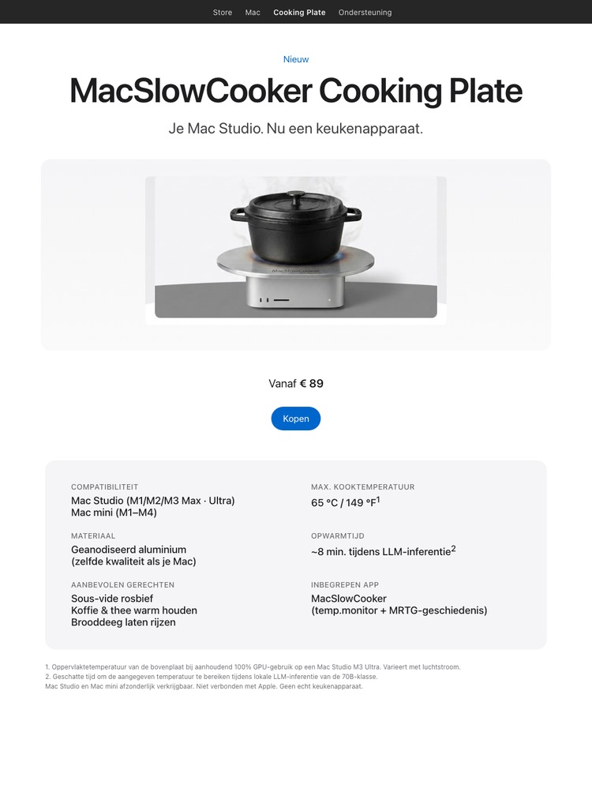

← hakaru Apps
CONCEPT / PARODIE
MacSlowCooker Cooking Plate
Je Mac Studio. Nu een keukenapparaat.

Dit is een grap. De MacSlowCooker Cooking Plate is geen echt product, accessoire of handelsmerk. De pagina hierboven is een parodie op een Apple-productlancering. Apple is niet verbonden met of op de hoogte van dit concept.
Waar de grap vandaan komt
Tijdens het ontwikkelen van MacSlowCooker — een echte macOS-app die GPU-gebruik op het Dock visualiseert als een kookpot — werd het chassis bij lokale LLM-inferentie op een Mac Studio M3 Ultra zo warm dat de grap "kun je hier eigenlijk op koken?" telkens terugkwam.
Vandaar deze conceptpagina. Het frame de warmteafgifte van een hardwerkende Mac als een keukenfunctie. De cijfers zijn echt, het product niet.
De echte cijfers
- De Mac Studio M3 Ultra bereikt ongeveer 65 °C / 149 °F op de bovenplaat bij aanhoudend 100% GPU-gebruik.
- Tijd om die temperatuur te bereiken tijdens lokale LLM-inferentie van de 70B-klasse: ~8 min.
- Apple's thermisch ontwerp houdt de bovenplaat ruim onder normale kooktemperaturen. Sous-vide bereik, geen wok.
- Je kunt dit alles live monitoren met de echte MacSlowCooker-app (Dock-icoon, popup-venster, MRTG-style 4-paneel geschiedenisweergave).
Doe dit echt niet
Heet kookgerei, vloeistoffen of warmtegevoelige zaken op een actieve computer zetten is een slecht idee. De bovenplaat van de Mac Studio is van aluminium, maar de luchtstroom is kritiek om de SoC onder thermische limieten te houden. Blokkeren verkort de levensduur van de machine en kan de garantie ongeldig maken.
Lees meer